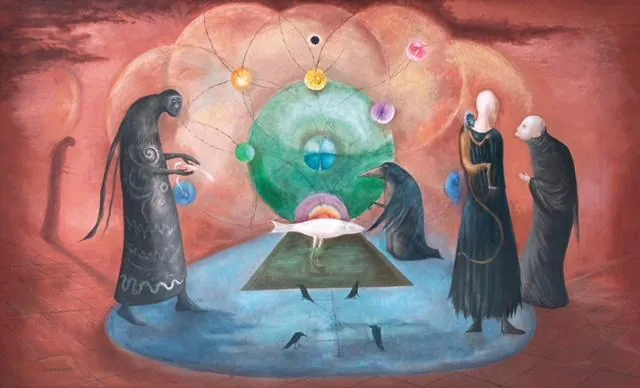
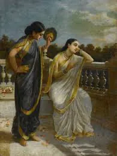
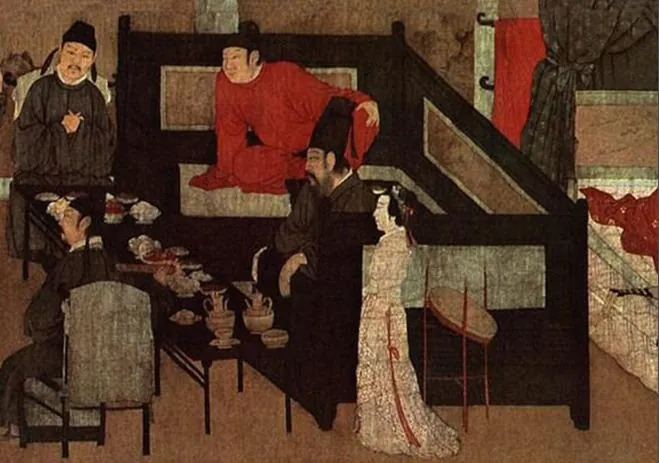
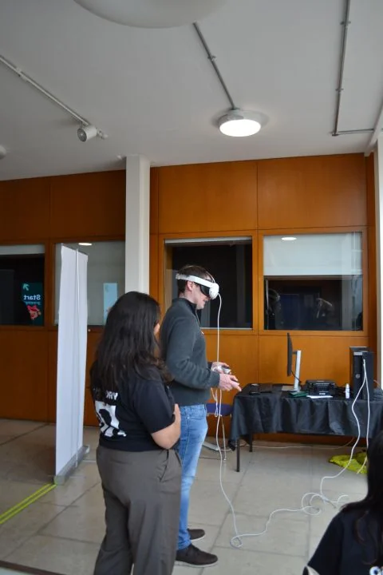
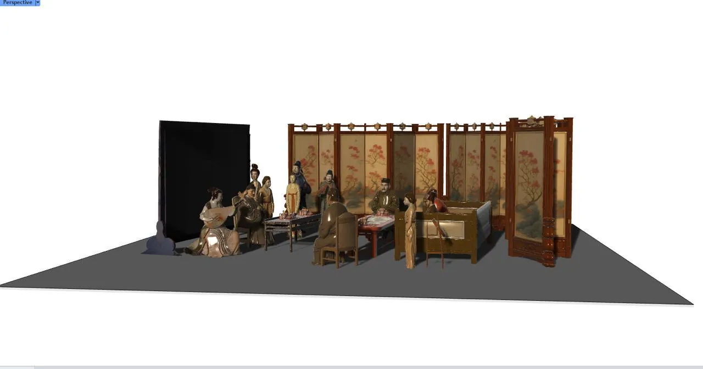
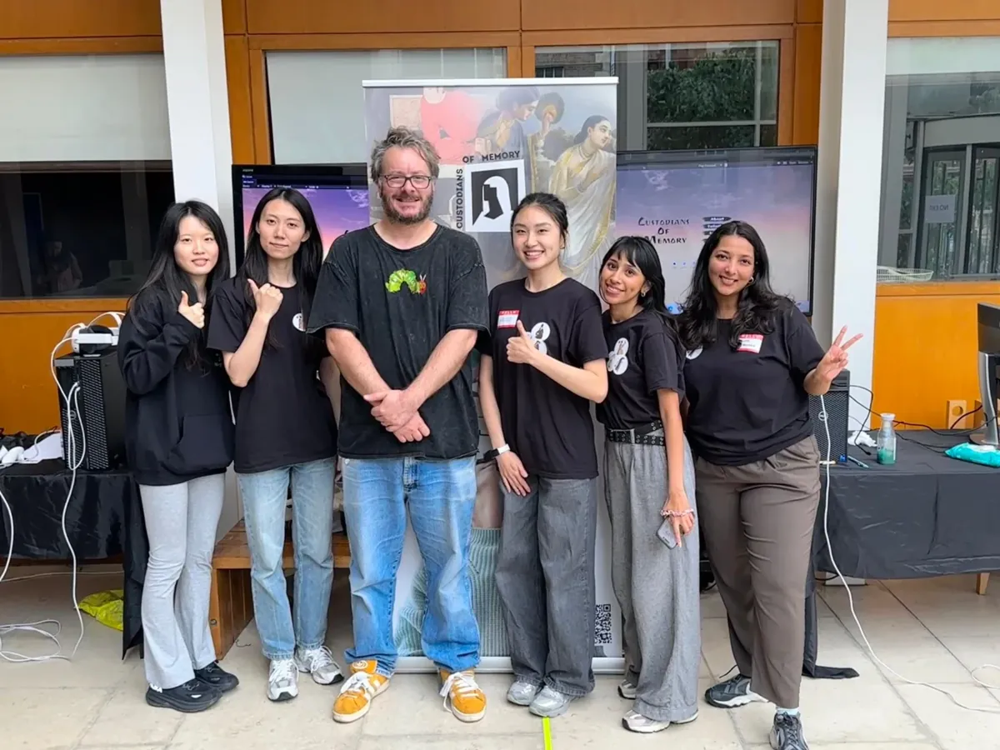
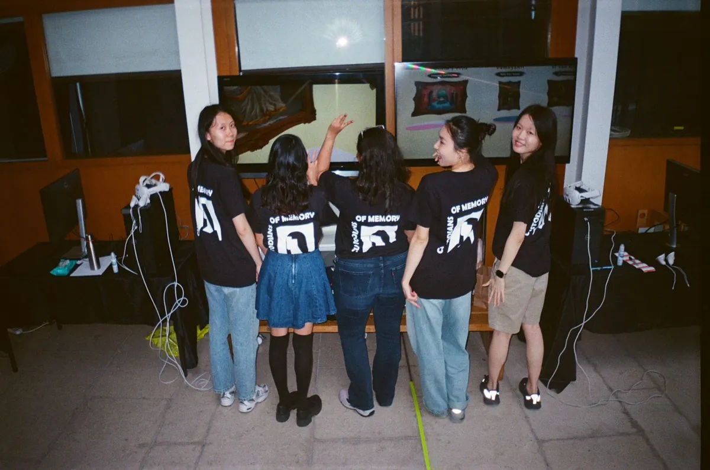

Context
Museum-goers usually engage with art passively: behind glass, at a distance, with limited context about the story, technique or culture behind the work. That creates a barrier between the artwork and its audience, especially for younger and less traditionally “museum-going” visitors.
The goal: let players step inside iconic paintings, turning static 2D artworks into explorable 3D environments where they discover the stories, techniques and cultural contexts behind the art.
The key test for each painting was whether its perspective and composition could become an explorable 3D space within our time and resources. Our first choice for the Indian painting failed that test: it would have needed an overly large space, so we swapped it. The final three:
- Virginia's Fish by Leonora Carrington (Mexico)
- Damayanti by Raja Ravi Varma (India)
- The Night Revels of Han Xizai by Gu Hongzhong (China)



My role
- Gameplay systems: locomotion, interaction, transitions and optimisation.
- Project management across a 5-person interdisciplinary team.
- Integration “gatekeeper” for the shared Unity project.
- Branding and showcase logistics: banners, posters, brochures, stickers and t-shirts, from print quotes to delivery.
The team: Haiqi Xiong (3D integration and interaction), Yinqi Shu (3D art, environments and audio), Giselle Cruz Martínez (creative direction and narrative research) and Xinyu He (VR UI). We met our supervisor every Monday and as a team every Friday.
The challenge
Moving beyond passive viewing meant solving three problems at once:
- Translation: turning flat, historical 2D paintings into spatially coherent 3D environments without losing artistic authenticity.
- Interaction design: building locomotion, object grabbing and cues that feel natural to first-time VR users.
- Team coordination: keeping a 5-person team with different skills, schedules and tools on track under a tight deadline, in a Unity project that made parallel work difficult.
Key decisions
1. Anchors, not teleport-anywhere
- Decision
- Anchor-based teleportation between key spots, with continuous movement within each scene, instead of universal teleportation.
- Why
- To encourage deliberate exploration of each painting while keeping players immersed.
- Next time
- Showcase feedback asked for freedom to teleport anywhere, so that's the first change for the next iteration.
2. Subtle cues that respect the art
- Decision
- Haptic feedback and trigger lines to show which objects can be grabbed, instead of making them glow.
- Why
- A glow would have changed how the paintings look. Feedback also showed that discovering objects was more enjoyable than obvious cues: sometimes restraint creates the wonder.
3. One integrator when Git couldn't keep up
- Decision
- A sequential integration model: teammates shared work through Google Drive and WeTransfer, and I merged everything into the master Unity project.
- Why
- GitHub proved unworkable for large Unity binaries. A single integrator, weekly supervisor meetings and internal check-ins kept a 5-person team with different schedules aligned.
Testing & iteration
Most of us were new to Unity and VR, so the experience took shape by testing in the headset, finding what broke, and changing it.

Moving between paintings
- First try
- Players walked straight through a painting into the next scene, like stepping through a screen.
- What broke
- Performance dropped in the heavier Indian and Chinese scenes.
- Change
- On our supervisor's advice I added a loading scene. A skybox version was too heavy and static, so I rebuilt it as particles on black, which also gave the transition the fairy-tale feel we wanted.
Controllers that stopped responding
- What broke
- After a transition, controllers often stopped responding or reset late, which broke immersion.
- Change
- I wrote a C# script to reset the controllers on entering each scene, and kept the XR Origin and XR Interaction Manager persistent across scenes. A small delay remained, a reminder to keep testing.
Lag from heavy assets
- What broke
- Detailed models and textures caused lag that risked breaking presence.
- Change
- Baked lighting, unlit textures where they didn't hurt the look, and stripping unnecessary assets, balancing fidelity with frame rate.

What we built
- Scene transitions: particle-based loading screens for smooth movement between paintings.
- Audio design: a calm, museum-like hub, shimmering transitions, and a soundscape for each painting, generated with AI and matched to its cultural origin.
- Performance: baked lighting and unlit textures kept heavy assets performant without compromising visual authenticity.
Impact
“Magical.” “Immersive.” Showcase visitors
- A working VR prototype that lets players explore three culturally significant paintings in 3D.
- Visitors asked to see more artworks brought into VR.
- Feedback shaped concrete next steps: freer teleportation and AI-driven character interactions.


The team at the showcase, with our branding: banner, t-shirts and the hub screen.
Reflection
Technical. Deepened my fluency in Unity VR workflows, C# scripting for scene transitions, asset and performance optimisation, and haptic interaction design.
Leadership. Learned to coordinate an interdisciplinary team through workflow breakdowns, anticipate problems before they escalate, and balance managing with hands-on development. Running the showcase taught me that how a project is presented shapes how it's received.
Creative. Developed a sharper sense for preserving artistic authenticity while layering in interactivity, treating the original artwork as source material to respect, not just a backdrop.
Next steps
- Expand to more artworks and cultures beyond the first three.
- Add conversational AI for characters living inside each painting.
- Partner with museums and cultural institutions to turn the prototype into a deployable educational exhibit.